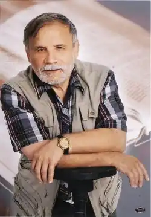

Народився 17 січня 1942 р. у селі Городок Львівської області.
Директор Львівського літературно-меморіального музею Івана Франка.
Активний і непересічний діяч у справі вивчення, збереження і використання з науковою і освітньою метою спадщини І.Франка. Його перу належить понад 300 досліджень і статей про І.Франка та багатьох письменників. Окремими виданнями вийшли його твори: "Тричі мені являлася любов", "Задля празника. У сутінках", "Легенди Нагуєвич", "Марія, мати Франкова", "Адреси пам’яті Івана Франка у Львові", "Адреси юності Франка в Дрогобичі", "Де верхи взносить наш Бескид гордий…", "Твого і’мя не вимовлю ніколи", "Призабуті з Вовкова", "Дім на Софіївці" та ін. Автор сценаріїв телевізійних фільмів про Івана Франка: "Рідне село Франка", "Адреси генія у Львові", "Дрогобич – місто юності Івана Франка", "Іван Франко і Львівський університет", "Іван Франко". Член Національної Спілки письменників України з 1988 року, заслужений працівник культури України, лауреат Львівської обласної премії в номінації "Літературознавство, сучасна літературна критика та переклади" імені Михайла Возняка, лауреат премії ім. І. Франка.